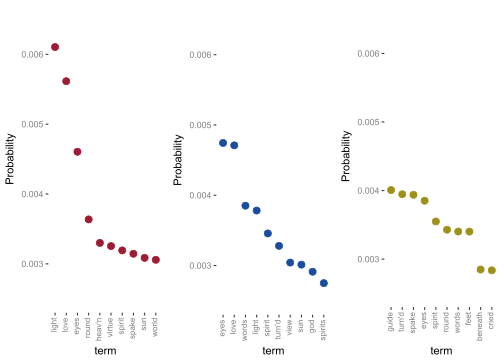

Topic Models
Anyone who has taken a literature class has been asked to discuss the various themes of a given text. How are such themes discovered? Upon close reading of the text, recurrent references to similar concepts might be bundled in our minds as some general theme hidden throughout the text. Discovery of such themes is part of the joy of reading in general.
One can think of these hidden, or latent, themes much as we would latent variables in factor analysis. Different texts have both contrasting and common themes, but the author doesn’t usually come out and announce a theme explicitly. Now consider a situation in which you have a million books. You can’t read that many, but may still want to discover the themes in them. This is where topic modeling can be useful.
We don’t actually analyze raw text, but what we can do is get word counts for every text64, and construct a document term matrix (DTM). In this matrix, rows represent the documents and columns represent terms that are found in all documents. The values represent the counts of how many times a term is found in a text. With many texts, one will easily have thousands of columns, but most texts do not use most of the words, resulting in a very sparse matrix that is mostly zeros. Still, now that we have a numeric matrix, we can perform analysis on it. The goal is just like the goal PCA and factor analysis- we want to reduce these thousands of columns of terms to a far fewer number of topics. Furthermore, like factor analysis, we will want to interpret the topics, in this case based on the terms associated with them.
Latent Dirichlet Allocation
The most common approach to topic modeling is latent dirichlet allocation (LDA), which one can think of as discrete PCA. In my opinion, this should be as much a part of your toolbox as PCA and Factor Analysis, as ‘compositional’ data, where we have counts of occurrences (out of some total), are quite common. In the past PCA was applied to such data, but it is essentially a less performant approach with less intuitive results.
I have gone into far more detailed demonstration elsewhere, and have no desire to duplicate it. I have workshop notes devoted exclusively to it, as well as hands-on demos here and here. However we can discuss a couple things, starting with the Dirichlet distribution. A draw from the Dirichlet distribution can be seen as a probability distribution for a k category event. It has one parameter, we’ll call \(\alpha\), which is often referred to as the concentration parameter. If the k \(\alpha\) values are equal, the resulting k probabilities will be equal on average, and with larger \(\alpha\), there will be less variance around that probability. When they are unequal, the larger values will result in larger probabilities assigned. Consider the following for k=5 topics.
library(gtools)
probs1 = rdirichlet(n=1000, alpha=rep(1,5))
probs2 = rdirichlet(n=1000, alpha=rep(100,5)) # less variance
probs3 = rdirichlet(n=1000, alpha=(1:5)^2)
map(list(probs1, probs2, probs3), colMeans) %>% map(round, 2)[[1]]
[1] 0.20 0.19 0.20 0.20 0.20
[[2]]
[1] 0.2 0.2 0.2 0.2 0.2
[[3]]
[1] 0.02 0.07 0.17 0.29 0.45In topic modeling, the probabilities can represent the probability of various topics, or the probability of terms within topics. However, the thing to note is that LDA can be applied to any appropriate data, it doesn’t have to be a document-term matrix resulting from text. Any count-based data matrix might potentially be appropriate.
Analysis
When it comes to topic modeling, most of the time is spent on processing the text itself. Importing/scraping it, dealing with capitalization, punctuation, removing stopwords, dealing with encoding issues, removing other miscellaneous common words. It is a highly iterative process such that once you initially get to the document-term matrix, you’re just going to find the stuff that was missed before and repeat the process with new ‘cleaning parameters’ in place. So getting to the analysis stage is the hard part. The following image is from the tidytext book, and gives some sense of the process, as well as some R packages that might be of use to you.

In what follows we’ll start at the point of having the DTM in place and ready for analysis. For our needs we’ll use the topicModels package for the analysis, and mostly others for post-processing. As mentioned, one of the primary results of such an analysis are the probabilities of terms within topics, which like factor loadings, can aid in interpreting the topics. The other result is the probability that a topic will be present in a given document.
The texts we’ll analyze are Dante’s Divine Comedy. Each canto within the three texts of Inferno, Purgatory, and Paradise will be treated as a document. I have already created the DTM where stopwords have been removed, but plenty more cleaning could have been applied. To get a sense of what’s going into the analysis, I show some of the more common terms, but note also, as in most text analysis, most terms are not present in most documents, leading to a notably sparse DTM.
load('data/topic/divine_comedy_dtm.RData')<<DocumentTermMatrix (documents: 101, terms: 10516)>>
Non-/sparse entries: 36748/1025368
Sparsity : 97%
Maximal term length: 16
Weighting : term frequency (tf)As with factor or cluster analysis, one must choose the number of topics to retain. There are various methods/statistics that can help with this, but simple interpretability could be used as well. We’ll go with three to see if the three books are uniquely expressive.
library(topicmodels)
chapters_lda = LDA(divine_comedy_chapters_dtm, k = 3, control = list(seed = 1234))
chapters_ldaA LDA_VEM topic model with 3 topics.First, we can simply look at probable terms. The following shows the top 10 most probable terms for each topic.

For the following I’ve collapsed across cantos to get an average topic probability for each book. For example, with the Inferno, the topic where god, heaven, and virtue are less probable, while the one with beneath and cried are more so. With Paradise you have the opposite situation, and are more likely to find the topics regarding virtue, heaven, sun, and god. Purgatory, perhaps not surprisingly is a fairly balanced mix of topics65.

Summary of Topic Models
This is just a snippet of the potential with topic modeling, but hopefully you get the idea. As in other latent variable approaches, one can see LDA as a dimension reduction technique, where thousands of terms are boiled down to a few topics. However, topic models can also possess a rich interpretive quality. Just remember that what you call ‘documents’, ‘terms’ and ‘topics’ is not limited to text, and is in fact highly flexible.